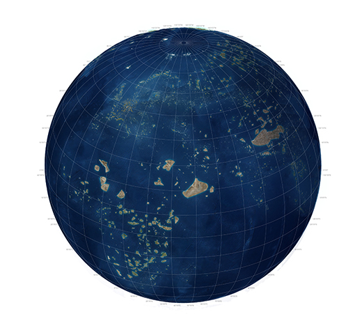
The Earth's protected areasFrontispiece of Theatrum Orbis Terrarum
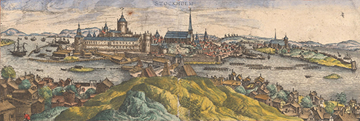
Civitates Orbis Terrarum, Frans Hogenberg, 1570.
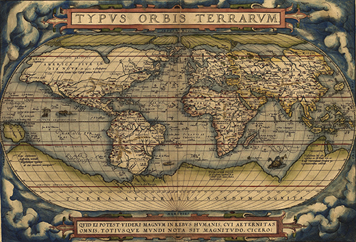
Ortelius World Map Typvs Orbis Terrarvm, 1570.
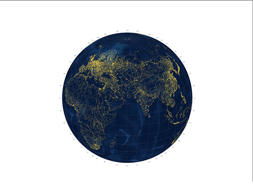
Planetary Urbanism
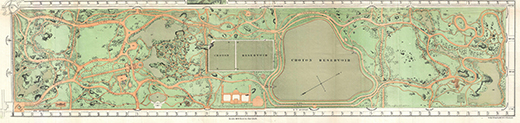
Map of Central Park, New York City, Vaux and Olmstead, 1870.
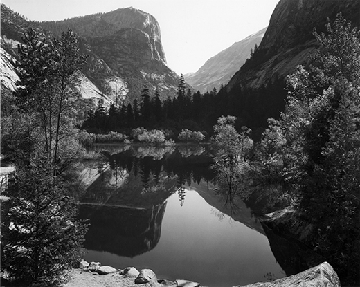
Mirror Lake, Morning, Yosemite National Park, Ansel Adams, 1928
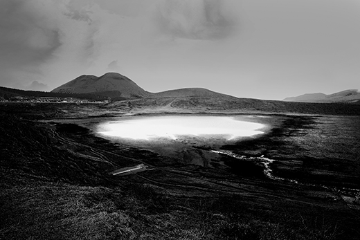
Pond That Never Dries Up In Pulau Pejantan, conservationists are trying their best to keep a pond from drying up from global warming. The pond is the home of the last six individuals of Grey Kokanee fish which can survive only in the unique ecological cocktail of those waters. Thousands of gallons of water is diverted to the pond every month and invading species of weeds and algae need to be removed regularly.
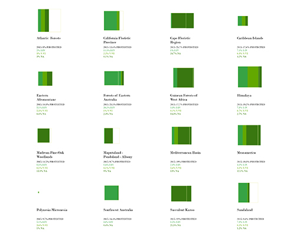
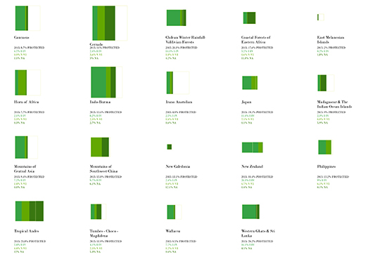
caption
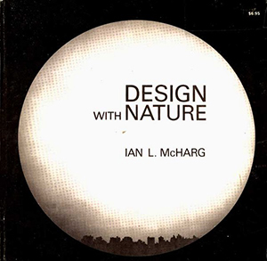
Design with Nature, Ian L. McHarg, 1969.World's protected areas, IUCN Categories I-VI.
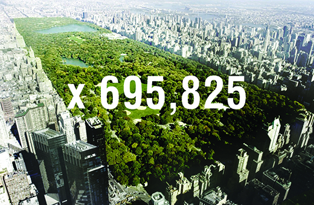
1.6% of the earth's terrestrial surface in number of Central Parks.
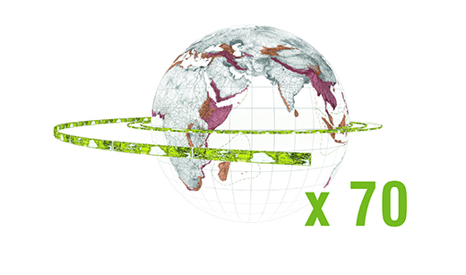
695,825 Central Parks can wrap around the globe 70 times.Map of World's biodiversity hotspots.
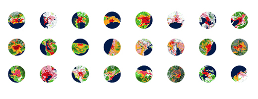
A sample of cities in Hotspots. Areas highlighted in yellow indicate zones of conflict between projected urban development and remnant habitat.Over 2000 satellites dedicated to imaging the earth are now in service.
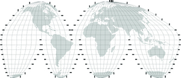
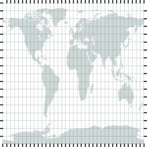
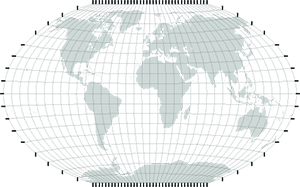
Left to Right: Mercator projection, Goode Homolosine Proljection (Land), Equidistant Cylindrical projection (Gall–Peters projection), Winkel Tripel NGS projection.
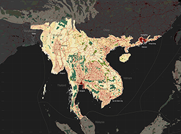
Biodiversity Hotspot: Indo-Burma.
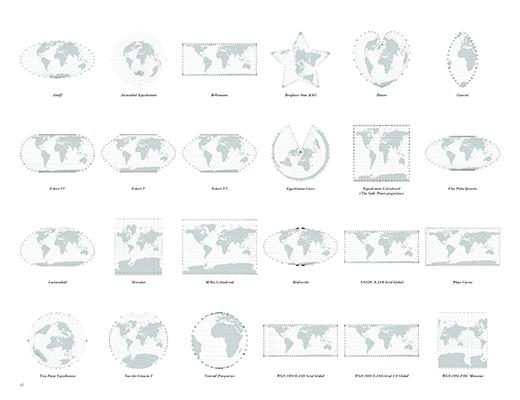
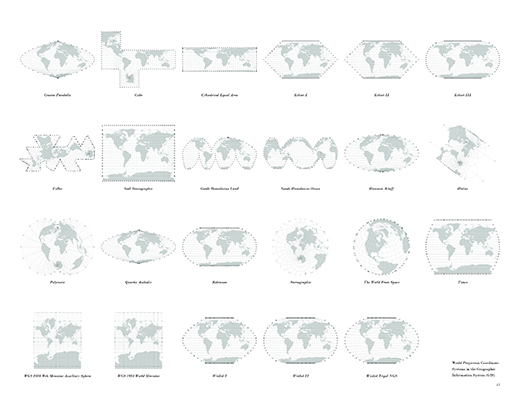
World Projection Coordinate Systems in the Geographic Information System (GIS)The Indo Burma hotspot broken down into its a constituent ecoregions.The indoburma Hotspot with zones of conflict between urban growth and biodiversity highlighted in yellow.
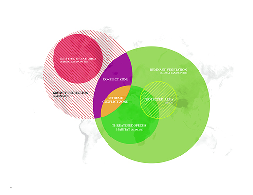
caption


 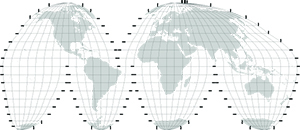
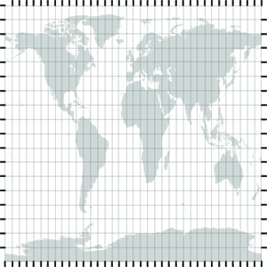
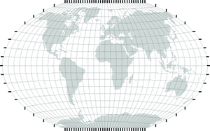
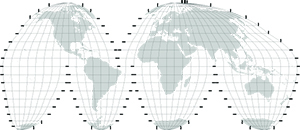
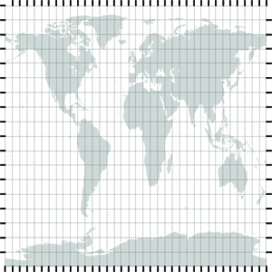
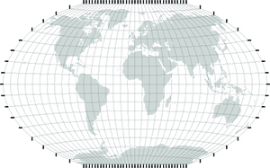